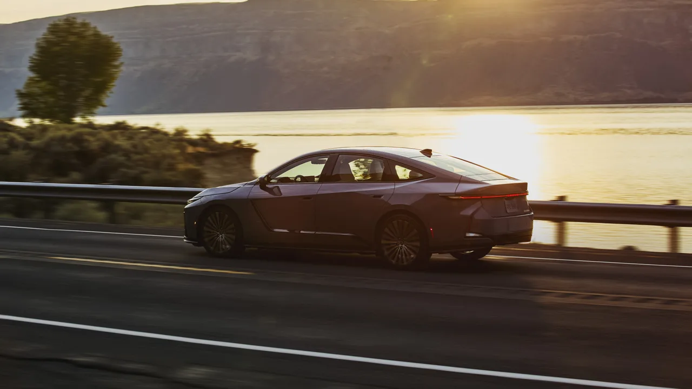
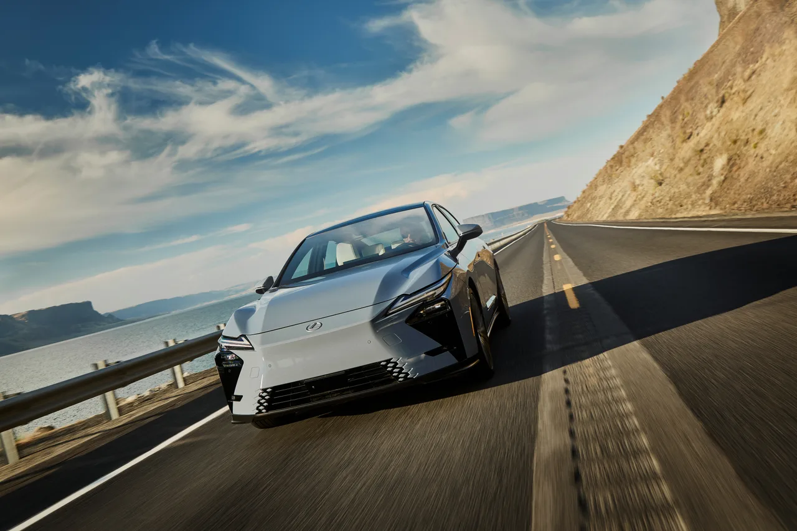
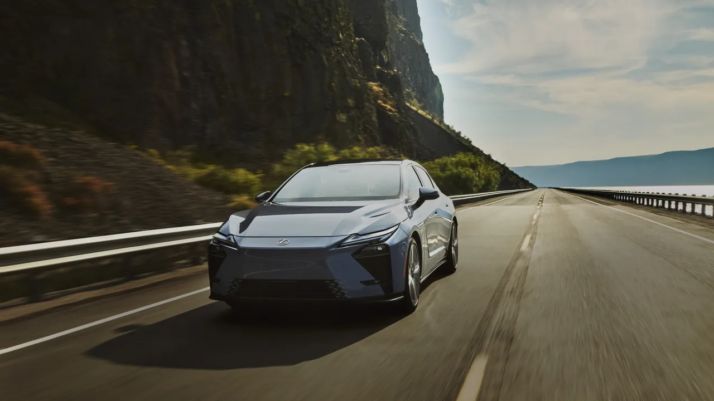

▲ 렉서스 ES 350e. 8세대 ES 라인업에 추가된 브랜드 최초의 순수전기 세단이다 ⓒ Lexus 제공
렉서스가 8세대로 새롭게 태어난 ES 라인업에 순수전기 모델 'ES 350e'를 더했습니다. 렉서스 최초의 배터리 전기(BEV) 세단이라는 타이틀을 단 이 차는, 브랜드가 오랫동안 쌓아온 정숙성과 편안한 승차감이라는 정체성을 전동화 시대에도 그대로 이어가려는 시도입니다. 파워트레인 하나만 놓고 보면 파격적이지 않지만, 렉서스가 가장 자신 있는 영역에 집중했다는 점이 눈에 띕니다.
1. 74.7kWh 배터리, EPA 약 494km
ES 350e는 74.7kWh 리튬이온 배터리를 얹고 221마력 모터로 구동합니다. EPA 기준 주행거리는 약 494km(307마일)로, 동급 프리미엄 전기 세단과 비교해 무난한 수준입니다. 렉서스는 이 차에 '멀티 패스웨이' 플랫폼을 적용했는데, 이는 하이브리드와 순수전기 두 파워트레인을 함께 수용할 수 있도록 설계된 유연한 아키텍처입니다. 전기 전용 플랫폼을 처음부터 새로 짓는 대신, 검증된 ES 세단의 뼈대를 전동화에 맞게 확장한 방식입니다.

▲ 주행 중인 ES 350e. EPA 기준 약 494km(307마일)를 달릴 수 있는 렉서스 최초의 순수전기 세단이다 ⓒ Lexus 제공
2. 그릴은 없앴지만 스핀들은 남겼다
외관에서 가장 눈에 띄는 변화는 라디에이터 그릴입니다. 전기차는 엔진 냉각을 위한 대형 그릴이 필요 없는 만큼, ES 350e는 이를 과감히 제거했습니다. 하지만 렉서스를 상징하는 스핀들 그릴 형상만큼은 차체 표면에 음각·양각으로 남겨, 전기차로 바뀌어도 렉서스라는 정체성을 잃지 않도록 했습니다. 전체적인 차체는 공기역학 성능에 초점을 맞춰 개발돼, 선이 아닌 면으로 조각한 듯한 곡면 설계가 특징입니다.
| 항목 | 내용 |
|---|---|
| 배터리 | 74.7kWh 리튬이온 |
| 모터 출력 | 221마력 |
| 주행거리(EPA) | 약 494km(307마일) |
| 플랫폼 | 멀티 패스웨이(하이브리드·EV 겸용) |
| 계기판 | 12.3인치 디지털 |
| 센터 디스플레이 | 14인치 |

▲ ES 350e의 정면. 라디에이터 그릴을 제거하면서도 렉서스 특유의 스핀들 형상은 차체 라인으로 남겼다 ⓒ Lexus 제공
3. "프리미엄 라운지"를 지향한 실내
실내는 대시보드를 얇고 수평으로 설계해 개방감을 강조했습니다. 12.3인치 디지털 계기판과 14인치 센터 디스플레이를 갖췄고, 물리 버튼을 최소화해 시각적으로 단순한 인상을 줍니다. 특히 2열 공간은 단순한 뒷좌석이 아니라 '프리미엄 라운지'에 가까운 공간감을 목표로 설계됐다는 점이 강조됩니다. 이는 ES가 오랫동안 자가운전자보다 뒷좌석 승객을 배려하는 세단으로 자리매김해온 흐름과도 맞닿아 있습니다.
4. 가속력 대신 승차감을 택한 이유
많은 전기 세단이 순간 가속력을 앞세우는 것과 달리, ES 350e는 부드러운 토크 전달과 안정적인 승차감에 초점을 맞췄습니다. 렉서스가 이 차에서 최우선으로 삼은 것은 정숙성, 편안한 시트, 장거리 주행 시 피로감 최소화입니다. 이는 ES라는 모델이 처음부터 스포츠 세단이 아니라 '이동 중 편안함'을 파는 차였다는 점을 감안하면 자연스러운 방향 설정입니다. 전동화가 오히려 이 정체성을 강화할 수 있다는 판단이 깔려 있는 셈입니다.

▲ ES 350e의 정면 디테일. 라디에이터 그릴을 없애면서도 스핀들 형상을 차체 라인에 새겨 렉서스의 정체성을 유지했다
5. 정리 — 국내 출시는 아직 미정
이번에 공개된 ES 350e는 일본 시승 기준으로 소개된 모델로, 한국 정식 출시 시기와 가격은 아직 발표되지 않았습니다. 다만 렉서스가 ES 라인업에 처음으로 순수전기 모델을 추가했다는 것 자체가 상징하는 바는 큽니다. 하이브리드의 대명사였던 브랜드가 순수전기 시대에도 같은 철학, 즉 화려한 스펙보다 편안함을 우선하는 방향으로 대응하고 있다는 신호이기 때문입니다. 국내 출시가 확정되면 준대형 전기 세단 시장에서 아이오닉6, 테슬라 모델3 등과 어떤 경쟁 구도를 만들지 지켜볼 지점입니다.